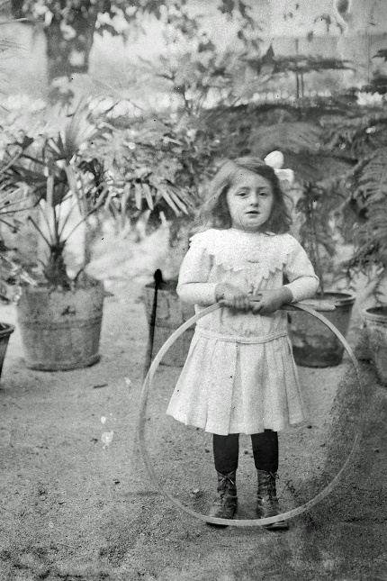
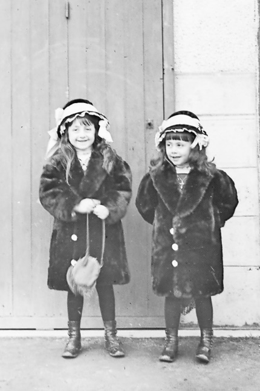
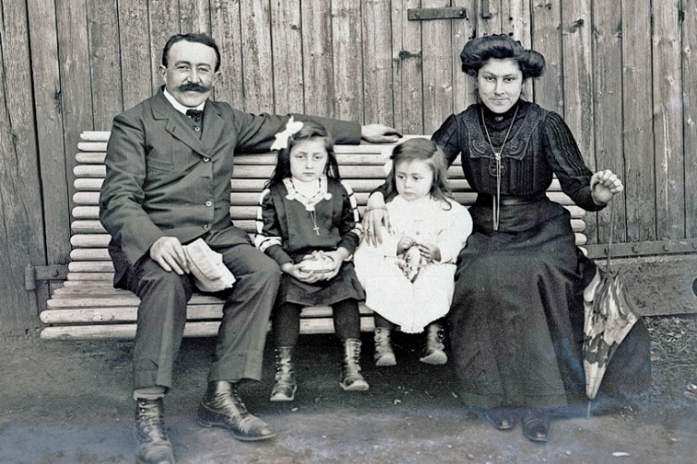
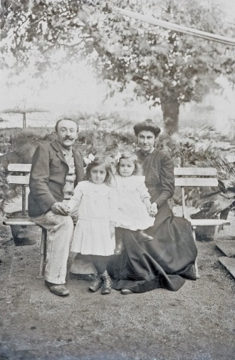
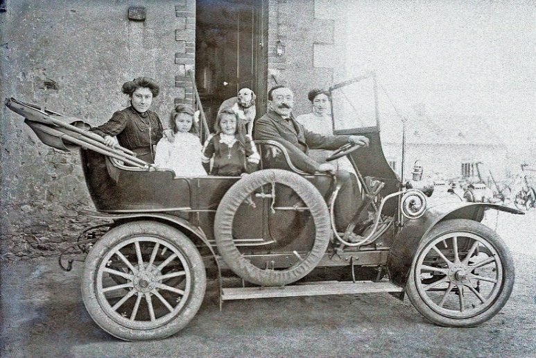
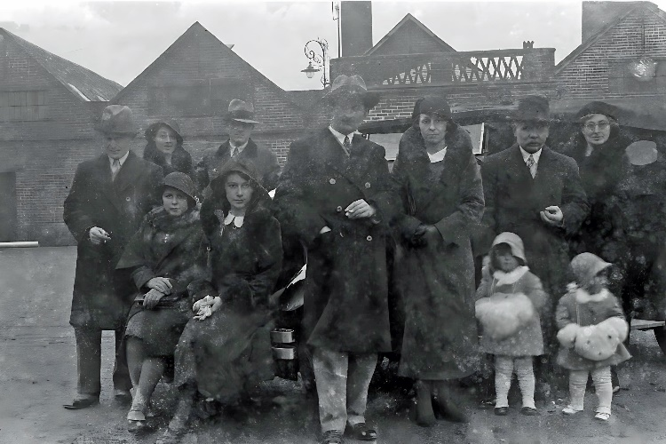
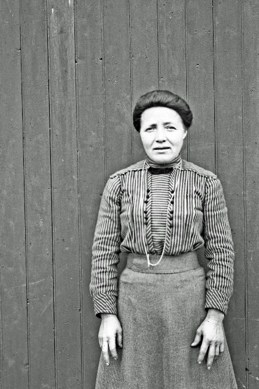
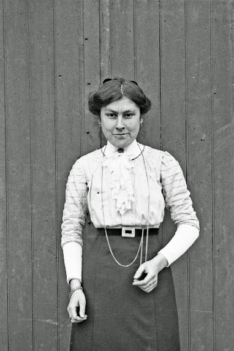
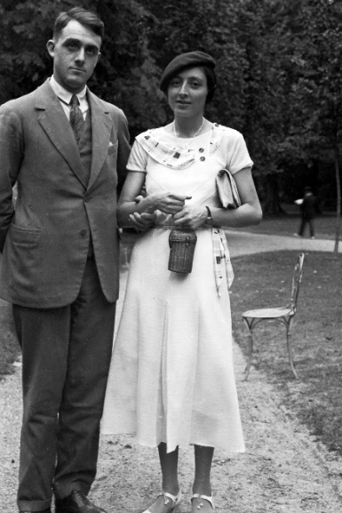

Note : Ces photos de famille proviennent du document Word original de la collection Augusta Boulay. Cliquez sur une photo pour l'agrandir.

Augusta Boulay enfant
Augusta avec un cerceau, dans la serre familiale à Craon

Augusta et Émilie Boulay
Les deux sœurs en manteaux de fourrure et chapeaux assortis

La famille Boulay
Auguste, Augusta, Émilie et leur mère Émilie Legros sur un banc

La famille Boulay au jardin
Auguste, les deux filles et Émilie Legros dans le jardin à Craon

La famille en automobile
La famille dans une automobile du début du siècle

Réunion familiale
Groupe familial avec plusieurs couples et enfants, années 1920-1930

Portrait de femme
Émilie Legros ou Marie Boulay

Portrait de jeune femme
Probablement Émilie Boulay, sœur d'Augusta

Augusta et Guy Lemonnier
Le couple après leur mariage (1931), probablement à Vichy